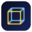

Bienvenue sur la page du Café du Lac !
Accueil | Le menu | Livre d'or | Liens
Vous êtes le 004217e visiteur.
Site en construction
Optimisé pour 800x600

Access4D TéléchargerPrototype v0.5 · Windows, Linux, Android
Access4D est un navigateur où chaque site est un panneau vivant, rangé dans un monde que vous traversez. Un geste, et ce panneau remonte dans les archives de la Wayback Machine.
Bougez la souris : vous tournez dans la quatrième dimension.
Pages vivantes. Chaque panneau est un vrai Chromium isolé : vous cliquez, tapez, vous connectez, comme dans n'importe quel navigateur.
Des mondes à explorer. Constellation, Ville, Tunnel. Vous volez entre vos pages au clavier, à la souris ou au doigt.
Une machine à remonter le temps. Chaque panneau peut afficher ses captures passées, de 1996 à aujourd'hui.
Ces 72 panneaux sont les mêmes d'un monde à l'autre. Choisissez comment Access4D les range, puis faites glisser pour tourner autour.
Les sites sont regroupés par liens et par domaine : ceux qui se ressemblent forment un amas.
Sur un panneau, le bouton horloge ouvre la machine à remonter le temps : les captures de la Wayback Machine défilent sous un curseur, et la page change sous vos yeux.
Illustration à droite : pages fictives. Access4D n'est pas affilié à Internet Archive.
Aujourd'hui
Choisissez une fonction dans la liste : l'aperçu à côté montre comment elle se comporte.
Loin : la vue monte pour tout embrasser. Près : elle descend et se cadre.
Rien n'est écrit en clair. Le coffre se reverrouille après 15 minutes. Le mot de passe principal ne peut pas être récupéré.
Noms d'exemple. Réglages > Confidentialité efface cookies, sessions et cache.
Le panneau au centre se réveille quand on s'en approche. Compromis : un panneau endormi ne joue plus de son et repart de zéro.
En mouvement : résolution réduite
Appuyez sur ces touches maintenant : elles s'allument. Dans Access4D, elles font voler la caméra.
Z Q S D (ou W A S D, ou les flèches). Espace monte, C descend, Maj accélère.
H vous ramène. Accueil donne la vue d'ensemble. Tab masque l'interface.
Ctrl+K cherche un panneau. Alt (maintenu) manœuvre au-dessus d'une page. F11 plein écran, F12 outils de développement.
Sans accélération 3D, tout se dessine sur le processeur. Deux causes le saturaient : une mini-carte redessinée quinze fois par seconde sur un fond flou, et un ciel recalculé à chaque image. La v0.4 a corrigé les deux : la carte ne se redessine que si elle change, le ciel est cuit une fois.
Mesures du journal de version : même scène, orbite de caméra, rendu logiciel, environnement de test Linux, v0.3 contre v0.4. Vos chiffres dépendront de votre machine ; le rapport devrait se retrouver. Avec une vraie carte graphique, c'est bien plus fluide.
Version 0.5.0, prototype. Un installateur normal : il s'inscrit dans vos applications et peut devenir votre navigateur par défaut.
Windows 10 ou 11, 64 bits
Télécharger l'installateur (.exe)Debian, Ubuntu, Kali et dérivés (64 bits)
Télécharger le paquet (.deb) ou l'AppImage, sans installationsudo apt install ./access4d_0.5.0_amd64.deb
apt install ./ et non dpkg -i : les bibliothèques manquantes s'installent seules.access4d.sudo apt remove access4d.Téléphones et tablettes Android
Télécharger l'APKLa version Android est en préparation. Le bouton s'activera dès que le fichier sera publié sur cette page.
Pas de version macOS pour l'instant. Aucune statistique, aucun pisteur sur cette page.
C'est un prototype. Chaque panneau est un vrai Chromium (via Electron), donc les sites s'affichent et fonctionnent normalement. L'interface 3D, le coffre de mots de passe, la machine à remonter le temps et les réglages sont ceux décrits sur cette page. Des limites existent : par exemple, les formulaires dans des sous-cadres (iframes) ne sont pas gérés par le coffre.
De la Wayback Machine d'Internet Archive. Access4D en liste les captures d'une adresse et les affiche dans le panneau. Il n'est pas affilié à Internet Archive.
Le coffre est un fichier chiffré (AES-256-GCM) dont la clé est dérivée de votre mot de passe principal par scrypt, dans le dossier de données de l'application. Rien n'est écrit en clair. Attention : le mot de passe principal ne peut pas être récupéré. S'il est perdu, le coffre doit être réinitialisé.
Sans 3D accélérée, le dessin passe par le processeur. Access4D bascule tout seul en rendu logiciel, mais le mieux est d'activer l'accélération 3D de la machine virtuelle (VMware : « Accelerate 3D graphics » et open-vm-tools ; VirtualBox : carte VBoxSVGA, « Enable 3D Acceleration », Additions invités). En attendant : qualité Basse et deux à quatre pages actives.
Parce que l'installateur n'est pas signé avec un certificat de signature de code. C'est le même message que pour n'importe quel logiciel non signé. Informations complémentaires, puis Exécuter quand même.
Sous Windows, Réglages > Général > Navigateur par défaut ouvre « Applications par défaut » : choisissez Access4D pour HTTP et HTTPS (Windows impose ce clic). Sous Linux, le même bouton définit le navigateur par défaut du système.